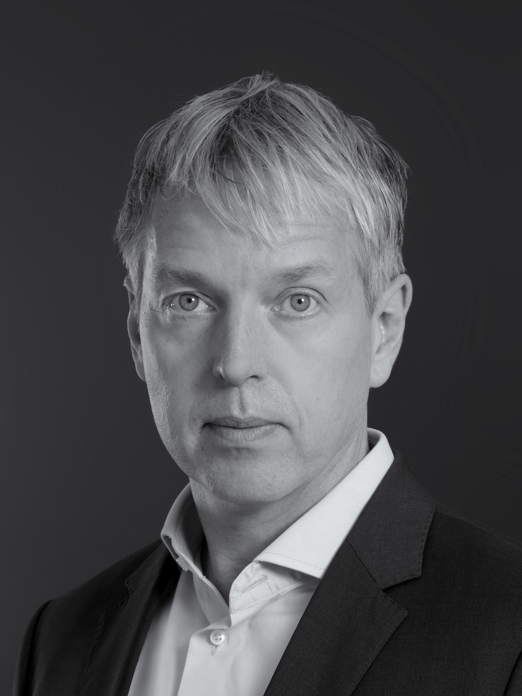
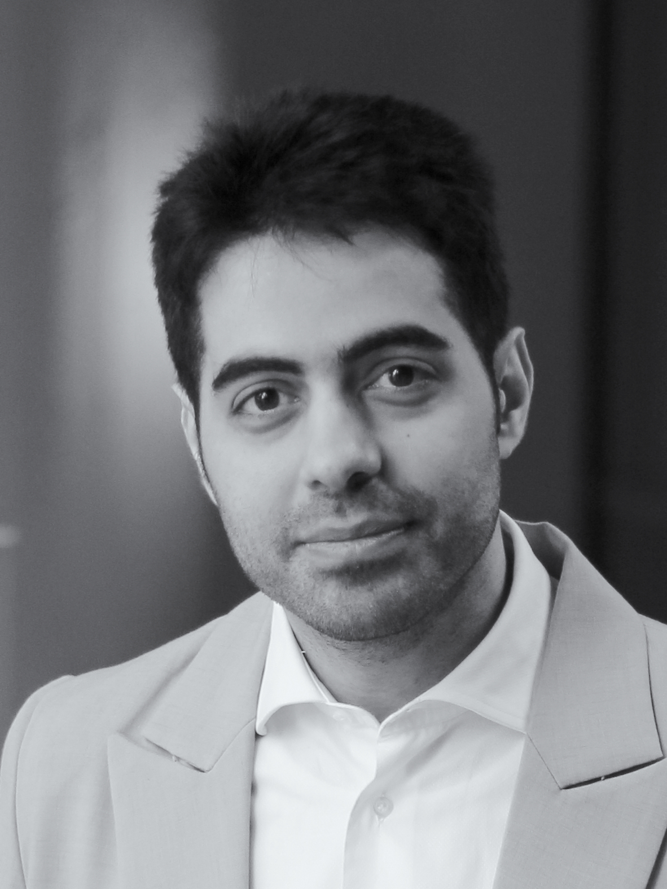

Two Independent Firms — The Full Technical Spectrum
Weisshuhn IP & Technology*

Dr. Philip Weisshuhn — life sciences and chemistry
Philip holds a DPhil in Biochemistry from Oxford, after graduating top of his class in Biology at Freie Universität Berlin. He is a German and European Patent Attorney and UPC Representative, with experience in patent prosecution at KUHNEN & WACKER and contentious pharmaceutical patent proceedings at df-mp. He focuses on complex chemistry, life sciences and pharmaceutical patent matters, and builds computational tools for opposition and appeal proceedings:
- Antibody technologies and biologics
- Small-molecule pharmaceuticals and medicinal chemistry
- Cell and gene therapies
- Biochemistry, molecular and structural biology
- Diagnostics and assays
- Agricultural biotechnology
- Materials science and polymers
- Computer-implemented inventions in the life sciences
- SPCs, regulatory exclusivity and medical-use claims
When Philip is hard to reach, he is usually somewhere between patent law and artificial intelligence, on a tennis court, or with a mathematics textbook.
In cooperation with PatentDecoder B.V.*

Dr. Mahmoud Shahin — engineering, physics and computer science
Mahmoud holds a PhD in Photonics Engineering, alongside degrees in microsystems, electrical, electronics, and telecommunication engineering. He is a European Patent Attorney, European Patent Administrator, and European Patent Litigator, based in Ghent, and founder of PatentDecoder. Since 2020, he has worked on patent applications, prosecution, and IP strategy across electrical engineering, telecommunications, electronics, microsystems, semiconductor technologies, photonics, image sensing, optics, physics, and mechanics:
- Photonics, optics and image sensing
- Semiconductors and integrated circuits
- Microsystems, sensors and MEMS
- Electronics and electrical engineering
- Signal and image processing
- Telecommunications and optical communication
- Computer-implemented inventions and software
- Physics and mechanics